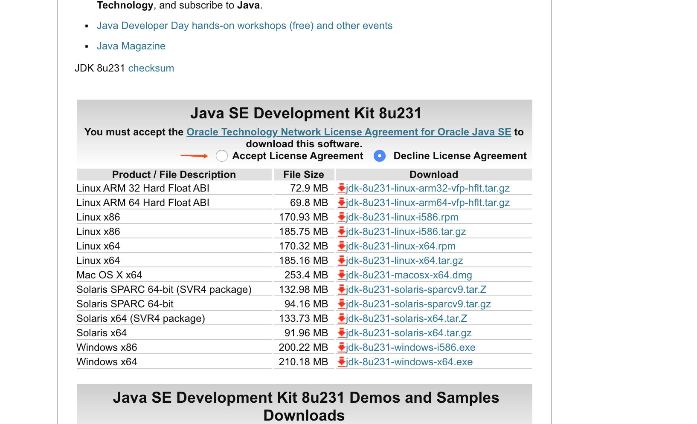
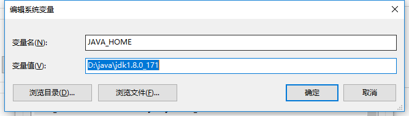
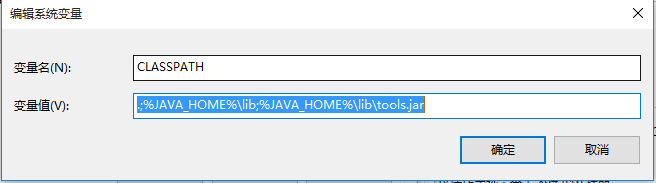
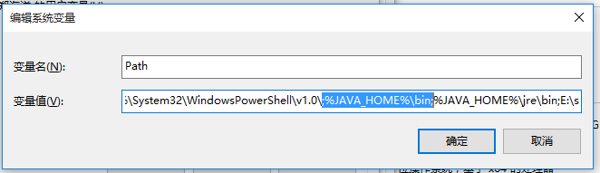
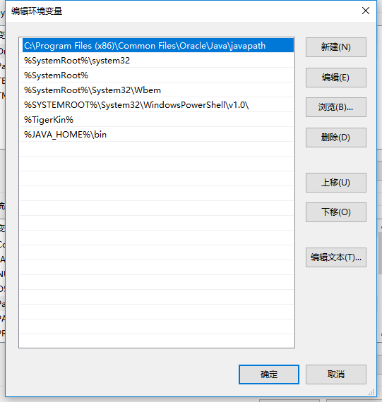
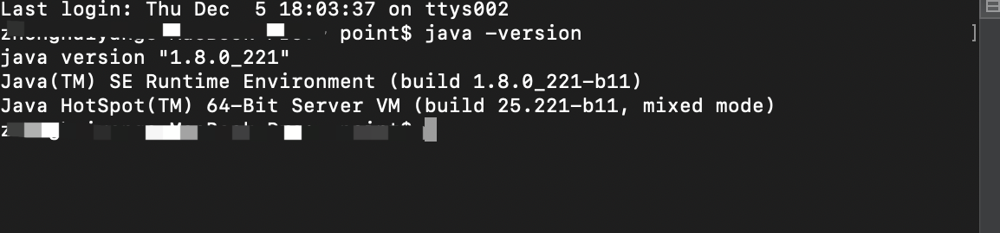

去java官网下载JDK1.8 因为目前市面上1.8用的比较多，你也可以下载新版本
官网下载连接

配置JAVA环境变量
选择【系统变量】点击【新建】
变量名--- JAVA_HOME
变量值--- 安装JDK的位置
点击 【确定】
继续点击 【新建】
变量名--- CLASSPATH
变量值--- .;%JAVA_HOME%\lib;%JAVA_HOME%\lib\tools.jar 【注意前面那个 . 】
点击 【确定】
选择 【系统变量】里的“path”变量 新建变量--- %JAVA_HOME%\bin (可能大家打开不一样)
 打开控制台 输入 【java -version】回车 会显示JAVA版本表示成功
